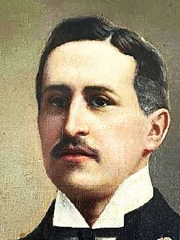
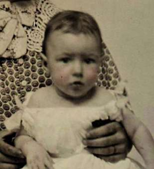

Борис Акунин
Мой календарь
Эраст Петрович Фандорин, мой благодетель и кормилец, родился 20 (по старому стилю 8) января 1856 года.
Он был наречен родителями в честь святаго Эраста Коринфскаго, а также в честь Эраста Петровича Перцова, с которым дружил родитель моего героя. Перцов кстати в свое время приятельствовал и с Пушкиным, говорившим, что в этом шутнике «много перца, соли и веселости».
Первое свое расследование малютка Эраст провел, пребывая еще в колыбельке.
Няня Мальвина Гедеоновна, кривая чухонка, пеленая малютку, от старательности выронила свой стеклянный глаз, нигде не могла его найти и очень убивалась, ибо протез обошелся ей в пятнадцать целковых.
Через некое время плачущая старушка увидела, что крошка настойчиво ей подмигивает своим маленьким синим оком, будто силится что-то сказать. Уж не судорога ли у него, перепугалась Мальвина Гедеоновна и распеленала дитя. К ее носу протянулась ручка, в ней был утраченный глаз.
После этого случая няня прониклась к малютке таким почтением, что никогда больше не заматывала его в батист. Поэтому, вероятно, Эраст Петрович и вырос человеком, который всегда и во всем чувствовал себя свободным.
Это только со стороны кажется, что цзюнцзы, благородный муж, со всех сторон окутан пеленками принципов и этических запретов. На самом деле только твердые правила дают человеку подлинную свободу. Если, конечно, он сам себе эти правила выработал.